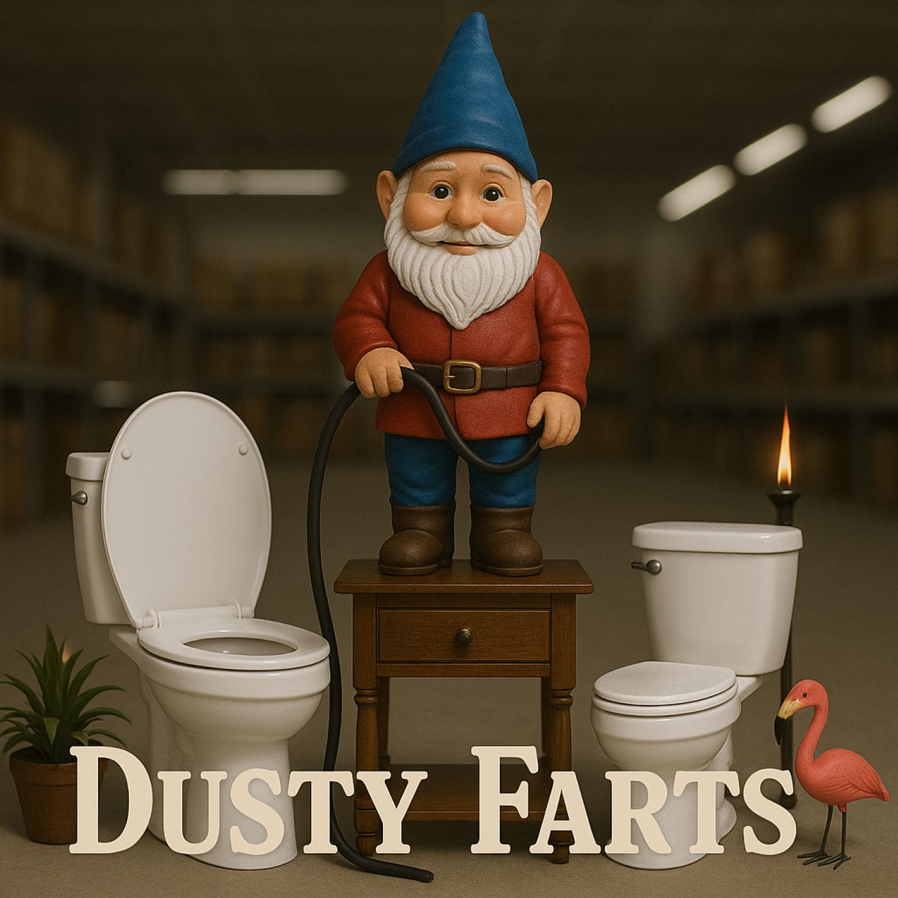

Episode 6: Nuts and Dolts

Download MP3 (17 MB)
Chapters
Summary
This week, John (Dusty) and Fred (Farts) set up camp in the most unlikely of booths: a pair of toilets in the middle of a big-box hardware store. With coffee dispensed by “Tiny Trickle,” the world’s first espresso gnome, the boys put their C.A.F.E. rating system to the test—sawdust brew and all.
Between demolition derby critiques, toilet throne debates, and live announcements about unionized garden gnomes, chaos reigns. Gigi stops by with real coffee (and some life news), while Doctor Bobby goes on a quest for a drain snake that somehow turns into colonoscopy philosophy. By the time the loudspeaker declares shopping carts to be livestock, it’s clear: Dusty and Farts have turned plumbing into prophecy.
Voices You’ll Hear
- John (Dusty) – curator of thrones, defender of regal porcelain
- Fred (Farts) – professor of sludge and creamless survivability
- Hope – narrator, conspiratorial guide through aisles of bad decisions
- Gigi – hardware store wrangler, voice of reason, and R-word deliverer
- Doctor Bobby – colonoscopy enthusiast with questionable shopping habits
Sound Stage
- Hardware Store – the scent of sawdust, sliding doors, echoing loudspeakers, toilets dragged into position, and Tiny Trickle the espresso gnome wheezing sadly in the background.
Transcript
Title
Hope: There’s a particular smell to a big-box hardware store. A holy trinity of rubber tires, pine dust, and indecision. It is here—between the paint shaker and the 47 flavors of doorknob—that our heroes, John and Fred, come seeking clarity. … And, naturally, coffee. … And, even more naturally, chaos. New sliding doors
John: Well grease my extension cord… these doors slide open like they actually know me.
Fred: That’s ‘cause you loiter here more than at the candy counter down at the old Woolworths.
John: Probably true. … Go Grab yourself a throne, Farts… and let’s go stake out our usual spot. Sounds of toilets being drug about.
Hope: Newcomers to “Dusty Farts” may ask, “Why toilets?” … That’s fair. … You see, for John and Fred, a booth ain’t about location — it’s about legacy. They’ll drag porcelain, vinyl, or even lawn chairs into place if it means facing each other like generals at a peace summit. Toilets just happen to come pre-installed with a certain… dignity.
Fred: Exactly. You can’t get this kind of majesty from a folding chair. … Toilets demand eye contact… and fiber.
Hope: They arrange the toilets face-to-face, adjust the angle for maximum eye contact, and accessorize. Tiki torches—borrowed from Lawn & Lounge. A plastic fern. One weather-beaten garden flamingo. And, for service…
[animatronic gnome]
Hope: …an animatronic gnome that John has re-homed to the front of the store and quote, upgraded, unquote, with a 2 gallon coffee reservoir and a gravity-fed dispensing hose.
Intro
John: Feast yer eyes, Farts—Tiny Trickle. The world’s first espresso-gnome.
Fred: Tiny Trickle? That’s a shame. Happens to us all though. You know back in his younger days, they called him “Old Faithful
John: Hush now—Tiny Trickle’s got a union rep. … Treat him with respect. Tiny, be a sport—two pours for the princes of porcelain!
[coffee pour]
Fred: Mmm. … Nose of lumber aisle. … Hints of pallet. … After-breath of questionable decision. … What did you say was the name of this blend?
John: Well, I filled Tiny up on the way in from a store cannister labelled “sawdust coffee
Fred: Sawdust Coffee! Today’s blend! … Alrighty! That means we finally get to apply the updated C.A.F.E. scale.
John: Certainly. … Proceed, Professor of Sludge.
[Fred sip]
Fred: Right, right—C.A.F.E.: Coffee Assessment for Flavor and Extraction. First metric—Temperature-to-Regret Ratio… ow! Hot enough to singe a conscience. … Second—Creamless survivability… well, it stands on its own two legs. I’ll give it that. … Got a nose of fresh lumber, a hint of carpenter’s glue… sturdy attributes, sure… but overall? I can’t go higher than a 4.5.
John: 4.5? … You’re grading on the curve of pity, Farts. Only reason it ain’t a two is ‘cause the gnome tips his hat when he trickles.
Hope: Besides the constant monitoring of the ever-changing coffee conditions, these knights of the commode park their thrones at the intersection of Main and Broadway because There they can watch the ongoing demolition derby in the parking lot, critique the bag handling amateurs at the self-checkout line, and dispense all manner of wisdom to those on spiritual quests to seek enlightenment in aisle 7.
John: I believe it was Sun Tzu who said, Modern problems require ancient solutions. Like duct tape and lying down.
Fred: And nothin’ speaks of true civilization, like a pair of porcelain prophets camped out in the middle of Menards.
John: That’s right. … And today, I picked the Deluxe Elongated Regal Flush, white as a dentist’s smile. … Strong lumbar support, elegant slope, … and wide enough for a man to spread out his grievances properly.
Fred: Interesting choice, my friend. … Meanwhile, I claimed the Compact Comfort Supreme. … short, stout, and closer to the ground. … Perfect for a man with knees like squeaky hinges and biscuits to protect. … The Cushion comes optional, but the pride is included.
John: Did you say ‘“Regal slope’? … Please. … Yours looks like it came outta a preschool bathroom.
Fred: Now, don’t be mean-spirited, Dusty. … Practicality, John! … Low center of gravity. If a demolition derby busts through that window, I can tuck and roll without crackin’ porcelain.
John: Meanwhile, mine’s got a seat so sturdy, they oughta list it as storm shelter.
Fred: Storm shelter? Har-har. … That behemoth is just a lazy boy with a flush handle. … You need FAA clearance just to land on that thing. Loudspeaker #1 Attention, shoppers. Your attention, please. Flash sale in Aisle 14. All duct tape now: buy 1, get 2 free. Only valid with coupon … and moment of introspective thinking.
[Crowd runs by]
John: Nice crowd today. Very energetic and enthused.
Fred: Yep. It should make for some grand entertainment in the parking lot later.
[Curtis walks up with shopping cart]
Fred: Hey Dusty, check it out. It’s our new friend Curtis!
John: Well, Hi, Curtis. It’s been a long while. … Looks like you’re still celebrating your birthday.
[party popper sound]
Curtis: Long time? Yeah, whatever, weirdo. … I just saw you two squirrel farts, like, 45 minutes ago at the park. … You were feeding Vienna sausages to squirrels.
John: Oh, yeah, right.
Fred: Ignore him, kid. He thinks 45 minutes ago was “the good old days.” … You here to spend your birthday loot?
Curtis: Nah. I just drove over to the Home Depot and used that gift card on a socket set with more sizes than your belt. , I’m just here for smart bulbs.
Fred: Well, Son of a brisket! … Smart bulbs? … Don’t tell me they’ve gone and put Wi-Fi in them daffodils. … Next thing you know, roses will be formin’ Facegram groups too.
Curtis: Not smart plant bulbs. Duh! … , smart light bulbs, you so dumb! You screw ‘em in to the socket, and they argue with your phone.
John: Perfect. First the toaster gave me attitude, now the lamp’s gettin’ mouthy.
Curtis: Yeah, whatever. … Okay later, kings of the commode. … Just remember: if you have to jiggle the handle more than twice, it’s probably broken.
An Old Friend
[curtis walks off with cart]
[crowd running with carts]
[Gigi walks up]
John: Now. Here comes a pleasant sight if I’ve ever seen one.
Gigi: Howdy John. Hey, Fred.
Fred: For the love of flapjacks! … Would you lookit that? … Hi, there, Gigi! … Nice to see you. … Time’s a slippin’ by. … Is it time already for our R word of the day?
Hope: Meet Gigi. … part-time associate, full-time coot wrangler. … Store Management assigned her to, in their words, “monitor the booth situation and minimize harm.” … But somewhere between refill number two and “would you guys please go sit over by the band saw?”, Gigi found herself leaning on these two for advice nobody else had time to offer. … …Marriage, mortgages, mysterious noises the dryer makes.
Gigi: Okay kids, listen up — these porcelain professors actually know a thing or two.
Hope: Gigi, who was once the voice of Princess Pancakes in the children’s show Magical Tractor Parade, shows her gratitude by lending her experienced voice to the Dusty Farts podcast as our resident pro in “R-words for the day.
Gigi: Speaking of which. … Hey kids, can you guess today’s special R word? … That’s right! Retaliation!
Fred: Retailiation. R.E.T.A.I.L.A.S.H.U.N. Retailiation. It’s when you don’t like the price at the Home Depot, so you go shoppin’ over at Menards. Retailiation.
[Aria walks up with cart]
Aria: Retaliation is also exactly what my digestive tract did the last time I let Bob talk me into his chili fries. … Hi there, punkin loaf. … Heeey, White Bread!
John: Oh—hi, Aria! … What are you doin’ here? You followin’ us?
Aria: Nope. Just here for some degreaser… and a few other odds ‘n ends.
Fred: Degreaser? What, Bob been cookin’ crankcase stew again?
Aria: No, sugar. Me and my boy were gonna see if we can scrape some of that gunk off John’s Mustang. Thing’s got more buildup on its undercarriage than John’s got wax packed in his ears.
John: You most certainly may not wash the carburetor in beer!
Aria: Ear, John. Ear. … Good Lord—somebody invest in a hole auger and start drillin’ out them canals.
[Aria walks off]
[crowd running with cart]
[SFX: Coffee sips, a little satisfied ahh from Fred, followed by John’s grunt of disapproval.]
Fred: Well, Dusty. … I was downright excited to sample this new ‘sawdust coffee.’ Thought maybe it’d have some rustic charm — you know, earthy, full-bodied, with a nice carpenter’s finish. But to be honest, … feels more like it got filtered through a two-by-four and called it a day.
John: Filtered? More like it got bullied through plywood, mugged in the lumber aisle, and left for dead in my cup. This ain’t coffee, Farts — it’s tree sweat.
Another Old Friend
Gigi: Hold up. Sawdust coffee? … What in the world do you two mean by sawdust coffee?
John: Well, on our way in, I spotted that fancy canister sittin’ by the south entrance — big letters: ‘Sawdust Coffee.’ So naturally, I topped up Tiny Trickle here. Figured Menards was branching out into artisanal blends.
Fred: Yeah, I thought it was bold branding. Rugged. Pioneering. Smelled like it came straight out of Abe Lincoln’s tool shed.
Gigi: Gentlemen… that ain’t coffee. That’s literally just the runoff water they collect when they dry sawdust. They use it for… cleaning brushes. … Y’all basically been drinking janitor rinse.
[john spittake]
John: Lord have mercy — I been baptizin’ my buds in broom juice?
Fred: Well… I did say it had a nice lumber finish. Guess I wasn’t wrong.
Gigi: No wonder you gave it a 4.5. … That wasn’t generosity, that was your tongue filing for hazard pay. … Hey, let me go see what we got in the staff lounge. Doctor Bobby shows
[Doctor Bobby walks up with cart]
Dr. Bobby: Hello, comrades! Ahh, my favorite philosophers of porcelain! I see you still have… crumbs on shirts. … Means you came here directly after blood bus. … I approve! … Handling sharp tools and gas-powered equipment after donating blood is excellent idea.
John: Oh Lord, Doc, don’t start with that again. How come every time I see you; you ask me about my quarterly colonoscopy?
Fred: Well, Dusty, look at it this way — at least he’ll bake you a strudel afterward.
John: Something to look forward to, I guess. … Now, what brings you in today, Doc? ? We’re the curators of this fine hardware collection. Like museum keepers of plumbing and poor choices.
Dr. Bobby: Today, I require… a drain snake!
John: A drain snake? Ain’t that what they used to call you when you were pokin’ around veins on the blood bus?
Dr. Bobby: Nyet, nyet — this is long probe, flexible, used for clearing blockages in pipes. Very different from vein. Pipes usually complain less.
The Third Stooge
Fred: Oh, so this is for the blood bus then?
Dr. Bobby: No, no — this is strictly business. It counts as business deduction, yes? For tax purposes. Could be medical equipment… could be bakery tool. Who is to say?
John: Doc, isn’t your business… colonoscopy?
Dr. Bobby: Da! That… and bakery. Take your pick. One clears blockage, other creates it. Balance of nature!
Fred: Ok, then. … You’ll find them drain snakes down by the tiki torches. Right next to the citronella …candles. Can’t miss it.
[SFX: Gigi returns, carrying a pot of coffee. She stops short, overhearing.]
Gigi: John? Do you even know what a drain snake is? Lord help us. Doc, Aisle Five — plumbing wall, right side, bottom shelf. Not near the citronella.
Dr. Bobby: Aha! The lady knows! A true guide among fools.
Fred: Aww, shucks, doc. … Women will always be the smarter ones. We’re just louder.
[Doctor Bobby walks off]
Gigi: That wisdom deserves some proper coffee. … Goodness knows Tinkle Toy over there ain’t cuttin’ it.
[SFX: Coffee pours into their cups. Tiny Trickle whirs sadly in the background.]
John: Appreciate the refill. But hey, how you holdin’ up? You and your husband still savin’ for that down payment?
Gigi: We’re tryin’. We’ve scrimped and pinched every dime… but then the twins got sick last month. Nothing serious, thank the Lord, but enough hospital bills to knock us back a year.
Fred: Oh honey. … Life’s cruel that way. Always sneaks in through the side door when you’re savin’ up.
John: Well, Gigi… You know, I’ve got that cabin up by Lake Waskatoochie. … Ain’t much, but it’s solid. … Needs screens, raccoons squat on the porch, and the heater wheezes like Fred after chili fries… but it’s dry, and it’s yours as long as you need it.
Gigi: John… I couldn’t… that’s too much—
Fred: Take it, girl. It’s just sittin’ there. And it’s perfect for a young family. Cozy, forgiving… kinda like us, only less noisy.
John: You’ll get the key before the week’s out. But you better bring coffee, cause the place is dry.
Gigi: Well, it sounds perfect. … It sounds just like the place my friend Jimmy wants to get when he retires. … I really can’t thank you guys enough. Loudspeaker 4 Attention, shoppers. Your attention, please. Ladies and gentlemen, we regret to inform you the lumber department is now sentient. Carry sharp implements through the back regions of the store at your own peril.
Gigi: I better go. … I have a feeling I’m needed in the lumber aisle.
[Gigi walks off]
John: Wow, that was close.
Fred: No kidding. … Thank goodness for sentient wood. … Dusty, my friend, we almost got hugged. Loudspeaker 5 Attention, shoppers. Your attention, please. 75% off all left-handed Allen wrenches. Right-handed customers may apply for a hardship grant at the customer service desk.
[pause]
John: Farts, my man. … Think that’s our cue.
John: Farts, my man… I think that’s our cue.
Fred: Another day’s work done. Advice given, souls uplifted, mysteries of plumbing clarified. … We’re practically a public service.
John: Yep. Helpful and knowledgeable, even when we ain’t even close to right.
Fred: Amen. Wrong with confidence, that’s our brand.
[toilets dragged back]
Hope: And so, our porcelain prophets shuffle off again — lighter by a few cups of questionable coffee, heavier with the weight of advice no one asked for. They came, they critiqued, they misdirected customers into the wilds of Menards… and left believing, with absolute certainty, they’d done the world a favor. Which, in their own little way, … they had.
[Poppin them knees out]